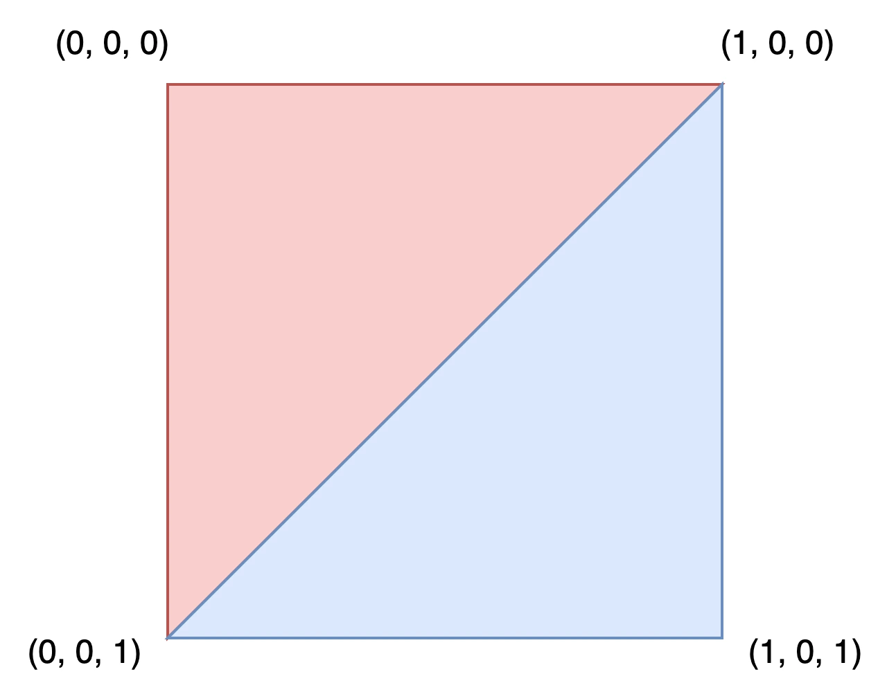

Sử dụng ArrayMesh
Bài hướng dẫn này sẽ trình bày những kiến thức cơ bản về cách dùng ArrayMesh.
Để làm vậy, chúng ta sẽ dùng hàm add_surface_from_arrays(), hàm này nhận tối đa năm tham số. Hai tham số đầu là bắt buộc, còn ba tham số cuối là tùy chọn.
Tham số đầu tiên là PrimitiveType, một khái niệm của OpenGL chỉ dẫn GPU cách sắp xếp primitive dựa trên các đỉnh được cung cấp, tức là chúng biểu diễn tam giác, đường thẳng, điểm, v.v. Xem Mesh.PrimitiveType để biết các tùy chọn có sẵn.
Tham số thứ hai, arrays, là Array thực sự lưu trữ thông tin của mesh. Mảng này là một mảng Godot thông thường được tạo bằng cặp ngoặc vuông rỗng []. Nó lưu một Packed**Array (ví dụ PackedVector3Array, PackedInt32Array, v.v.) cho mỗi loại thông tin sẽ được dùng để xây dựng bề mặt.
Các phần tử thường gặp của arrays được liệt kê bên dưới, cùng với vị trí mà chúng phải có trong arrays. Xem Mesh.ArrayType để biết danh sách đầy đủ.
Index |
Enum Mesh.ArrayType |
Kiểu mảng |
|---|---|---|
0 |
|
|
1 |
|
|
2 |
|
PackedFloat32Array hoặc PackedFloat64Array gồm các nhóm 4 số thực. 3 số đầu xác định tangent, và số cuối xác định hướng binormal là -1 hoặc 1. |
3 |
|
|
4 |
|
|
5 |
|
|
10 |
|
PackedFloat32Array gồm các nhóm 4 số thực hoặc PackedInt32Array gồm các nhóm 4 số nguyên. Mỗi nhóm liệt kê chỉ số của 4 xương tác động lên một đỉnh nhất định. |
11 |
|
PackedFloat32Array hoặc PackedFloat64Array gồm các nhóm 4 số thực. Mỗi số thực cho biết mức trọng số mà xương tương ứng trong |
12 |
|
Trong hầu hết trường hợp khi tạo mesh, chúng ta định nghĩa nó bằng vị trí các đỉnh. Vì vậy thường thì mảng đỉnh (ở chỉ số 0) là bắt buộc, còn mảng chỉ số (ở chỉ số 12) là tùy chọn và chỉ được dùng nếu có. Cũng có thể tạo mesh chỉ với mảng chỉ số mà không có mảng đỉnh, nhưng điều đó nằm ngoài phạm vi của bài hướng dẫn này.
Tất cả các mảng khác mang thông tin về các đỉnh. Chúng là tùy chọn và chỉ được dùng nếu có. Một số mảng (ví dụ ARRAY_COLOR) dùng một phần tử cho mỗi đỉnh để cung cấp thêm thông tin về đỉnh. Chúng phải có cùng kích thước với mảng đỉnh. Các mảng khác (ví dụ ARRAY_TANGENT) dùng bốn phần tử để mô tả một đỉnh. Những mảng này phải lớn đúng gấp bốn lần mảng đỉnh.
Với cách dùng thông thường, ba tham số cuối của add_surface_from_arrays() thường được để trống.
Thiết lập ArrayMesh
Trong trình chỉnh sửa, tạo một MeshInstance3D và thêm một ArrayMesh cho nó trong Inspector. Thông thường, thêm ArrayMesh trong trình chỉnh sửa không hữu ích lắm, nhưng trong trường hợp này nó cho phép chúng ta truy cập ArrayMesh từ code mà không cần tạo mới.
Tiếp theo, thêm một script vào MeshInstance3D.
Trong _ready(), tạo một Array mới.
var surface_array = []
Godot.Collections.Array surfaceArray = [];
Đây sẽ là mảng chứa thông tin bề mặt của chúng ta - nó sẽ chứa tất cả các mảng dữ liệu mà bề mặt cần. Godot sẽ yêu cầu nó có kích thước Mesh.ARRAY_MAX, vì vậy hãy resize cho phù hợp.
var surface_array = []
surface_array.resize(Mesh.ARRAY_MAX)
Godot.Collections.Array surfaceArray = [];
surfaceArray.Resize((int)Mesh.ArrayType.Max);
Tiếp theo, tạo các mảng cho từng kiểu dữ liệu bạn sẽ dùng.
var verts = PackedVector3Array()
var uvs = PackedVector2Array()
var normals = PackedVector3Array()
var indices = PackedInt32Array()
List<Vector3> verts = [];
List<Vector2> uvs = [];
List<Vector3> normals = [];
List<int> indices = [];
Sau khi đã điền hình học vào các mảng dữ liệu, bạn có thể tạo mesh bằng cách thêm từng mảng vào surface_array rồi commit vào mesh.
surface_array[Mesh.ARRAY_VERTEX] = verts
surface_array[Mesh.ARRAY_TEX_UV] = uvs
surface_array[Mesh.ARRAY_NORMAL] = normals
surface_array[Mesh.ARRAY_INDEX] = indices
# No blendshapes, lods, or compression used.
mesh.add_surface_from_arrays(Mesh.PRIMITIVE_TRIANGLES, surface_array)
surfaceArray[(int)Mesh.ArrayType.Vertex] = verts.ToArray();
surfaceArray[(int)Mesh.ArrayType.TexUV] = uvs.ToArray();
surfaceArray[(int)Mesh.ArrayType.Normal] = normals.ToArray();
surfaceArray[(int)Mesh.ArrayType.Index] = indices.ToArray();
var arrMesh = Mesh as ArrayMesh;
if (arrMesh != null)
{
// No blendshapes, lods, or compression used.
arrMesh.AddSurfaceFromArrays(Mesh.PrimitiveType.Triangles, surfaceArray);
}
Ghi chú
Trong ví dụ này, chúng ta dùng Mesh.PRIMITIVE_TRIANGLES, nhưng bạn có thể dùng bất kỳ kiểu primitive nào có sẵn trong mesh.
Ghép lại, code đầy đủ trông như sau:
extends MeshInstance3D
func _ready():
var surface_array = []
surface_array.resize(Mesh.ARRAY_MAX)
# PackedVector**Arrays for mesh construction.
var verts = PackedVector3Array()
var uvs = PackedVector2Array()
var normals = PackedVector3Array()
var indices = PackedInt32Array()
#######################################
## Insert code here to generate mesh ##
#######################################
# Assign arrays to surface array.
surface_array[Mesh.ARRAY_VERTEX] = verts
surface_array[Mesh.ARRAY_TEX_UV] = uvs
surface_array[Mesh.ARRAY_NORMAL] = normals
surface_array[Mesh.ARRAY_INDEX] = indices
# Create mesh surface from mesh array.
# No blendshapes, lods, or compression used.
mesh.add_surface_from_arrays(Mesh.PRIMITIVE_TRIANGLES, surface_array)
public partial class MyMeshInstance3D : MeshInstance3D
{
public override void _Ready()
{
Godot.Collections.Array surfaceArray = [];
surfaceArray.Resize((int)Mesh.ArrayType.Max);
// C# arrays cannot be resized or expanded, so use Lists to create geometry.
List<Vector3> verts = [];
List<Vector2> uvs = [];
List<Vector3> normals = [];
List<int> indices = [];
/***********************************
* Insert code here to generate mesh.
* *********************************/
// Convert Lists to arrays and assign to surface array
surfaceArray[(int)Mesh.ArrayType.Vertex] = verts.ToArray();
surfaceArray[(int)Mesh.ArrayType.TexUV] = uvs.ToArray();
surfaceArray[(int)Mesh.ArrayType.Normal] = normals.ToArray();
surfaceArray[(int)Mesh.ArrayType.Index] = indices.ToArray();
var arrMesh = Mesh as ArrayMesh;
if (arrMesh != null)
{
// Create mesh surface from mesh array
// No blendshapes, lods, or compression used.
arrMesh.AddSurfaceFromArrays(Mesh.PrimitiveType.Triangles, surfaceArray);
}
}
}
Phần code ở giữa có thể là bất cứ thứ gì bạn muốn. Dưới đây chúng tôi sẽ trình bày một số code ví dụ để tạo các hình, bắt đầu với hình chữ nhật.
Tạo hình chữ nhật
Vì chúng ta dùng Mesh.PRIMITIVE_TRIANGLES để kết xuất, chúng ta sẽ dựng hình chữ nhật bằng các tam giác.
Một hình chữ nhật được tạo thành từ hai tam giác dùng chung bốn đỉnh. Trong ví dụ, chúng ta sẽ tạo một hình chữ nhật có điểm trên cùng bên trái tại (0, 0, 0) với chiều rộng và chiều dài bằng một, như minh họa bên dưới:


Để vẽ hình chữ nhật này, hãy định nghĩa tọa độ của từng đỉnh trong mảng verts.
verts = PackedVector3Array([
Vector3(0, 0, 0),
Vector3(0, 0, 1),
Vector3(1, 0, 0),
Vector3(1, 0, 1),
])
verts.AddRange(new Vector3[]
{
new Vector3(0, 0, 0),
new Vector3(0, 0, 1),
new Vector3(1, 0, 0),
new Vector3(1, 0, 1),
});
Mảng uvs giúp mô tả các phần của texture sẽ được đặt vào đâu trên mesh. Các giá trị nằm trong khoảng từ 0 đến 1. Tùy vào texture của bạn, bạn có thể muốn thay đổi các giá trị này.
uvs = PackedVector2Array([
Vector2(0, 0),
Vector2(1, 0),
Vector2(0, 1),
Vector2(1, 1),
])
uvs.AddRange(new Vector2[]
{
new Vector2(0, 0),
new Vector2(1, 0),
new Vector2(0, 1),
new Vector2(1, 1),
});
Mảng normals được dùng để mô tả hướng mà các đỉnh hướng tới và được dùng trong các phép tính chiếu sáng. Trong ví dụ này, chúng ta sẽ mặc định dùng hướng Vector3.UP.
normals = PackedVector3Array([
Vector3.UP,
Vector3.UP,
Vector3.UP,
Vector3.UP,
])
normals.AddRange(new Vector3[]
{
Vector3.Up,
Vector3.Up,
Vector3.Up,
Vector3.Up,
});
Mảng indices xác định thứ tự vẽ các đỉnh. Godot kết xuất theo chiều kim đồng hồ, nghĩa là chúng ta phải chỉ định các đỉnh của tam giác muốn vẽ theo thứ tự chiều kim đồng hồ.
Ví dụ, để vẽ tam giác đầu tiên, chúng ta sẽ muốn vẽ các đỉnh (0, 0, 0), (1, 0, 0) và (0, 0, 1) theo đúng thứ tự đó. Điều này tương đương với việc vẽ vert[0], vert[2] và vert[1], tức là các chỉ số 0, 2 và 1 trong mảng verts. Các giá trị chỉ số này chính là những gì mảng indices định nghĩa.
Index |
|
|
|
|---|---|---|---|
0 |
(0, 0, 0) |
(0, 0) |
Vector3.UP |
1 |
(0, 0, 1) |
(1, 0) |
Vector3.UP |
2 |
(1, 0, 0) |
(0, 1) |
Vector3.UP |
3 |
(1, 0, 1) |
(1, 1) |
Vector3.UP |
indices = PackedInt32Array([
0, 2, 1, # Draw the first triangle.
2, 3, 1, # Draw the second triangle.
])
indices.AddRange(new int[]
{
0, 2, 1, // Draw the first triangle.
2, 3, 1, // Draw the second triangle.
});
Ghép lại, code tạo hình chữ nhật trông như sau:
extends MeshInstance3D
func _ready():
# Insert setting up the PackedVector**Arrays here.
verts = PackedVector3Array([
Vector3(0, 0, 0),
Vector3(0, 0, 1),
Vector3(1, 0, 0),
Vector3(1, 0, 1),
])
uvs = PackedVector2Array([
Vector2(0, 0),
Vector2(1, 0),
Vector2(0, 1),
Vector2(1, 1),
])
normals = PackedVector3Array([
Vector3.UP,
Vector3.UP,
Vector3.UP,
Vector3.UP,
])
indices = PackedInt32Array([
0, 2, 1,
2, 3, 1,
])
# Insert committing to the ArrayMesh here.
using System.Collections.Generic;
public partial class MeshInstance3d : MeshInstance3D
{
public override void _Ready()
{
// Insert setting up the surface array and lists here.
verts.AddRange(new Vector3[]
{
new Vector3(0, 0, 0),
new Vector3(0, 0, 1),
new Vector3(1, 0, 0),
new Vector3(1, 0, 1),
});
uvs.AddRange(new Vector2[]
{
new Vector2(0, 0),
new Vector2(1, 0),
new Vector2(0, 1),
new Vector2(1, 1),
});
normals.AddRange(new Vector3[]
{
Vector3.Up,
Vector3.Up,
Vector3.Up,
Vector3.Up,
});
indices.AddRange(new int[]
{
0, 2, 1,
2, 3, 1,
});
// Insert committing to the ArrayMesh here.
}
}
Để xem ví dụ phức tạp hơn, hãy xem phần tạo hình cầu bên dưới.
Tạo hình cầu
Dưới đây là code mẫu để tạo một hình cầu. Mặc dù code được trình bày bằng GDScript, cách tiếp cận để tạo nó không có gì đặc thù của Godot. Cách triển khai này không liên quan gì đặc biệt đến ArrayMesh mà chỉ là một cách tiếp cận chung để tạo hình cầu. Nếu bạn gặp khó khăn khi hiểu nó hoặc muốn tìm hiểu thêm về hình học thủ tục nói chung, bạn có thể dùng bất kỳ bài hướng dẫn nào tìm thấy trên mạng.
extends MeshInstance3D
var rings = 50
var radial_segments = 50
var radius = 1
func _ready():
# Insert setting up the PackedVector**Arrays here.
# Vertex indices.
var thisrow = 0
var prevrow = 0
var point = 0
# Loop over rings.
for i in range(rings + 1):
var v = float(i) / rings
var w = sin(PI * v)
var y = cos(PI * v)
# Loop over segments in ring.
for j in range(radial_segments + 1):
var u = float(j) / radial_segments
var x = sin(u * PI * 2.0)
var z = cos(u * PI * 2.0)
var vert = Vector3(x * radius * w, y * radius, z * radius * w)
verts.append(vert)
normals.append(vert.normalized())
uvs.append(Vector2(u, v))
point += 1
# Create triangles in ring using indices.
if i > 0 and j > 0:
indices.append(prevrow + j - 1)
indices.append(prevrow + j)
indices.append(thisrow + j - 1)
indices.append(prevrow + j)
indices.append(thisrow + j)
indices.append(thisrow + j - 1)
prevrow = thisrow
thisrow = point
# Insert committing to the ArrayMesh here.
public partial class MyMeshInstance3D : MeshInstance3D
{
private int _rings = 50;
private int _radialSegments = 50;
private float _radius = 1;
public override void _Ready()
{
// Insert setting up the surface array and lists here.
// Vertex indices.
var thisRow = 0;
var prevRow = 0;
var point = 0;
// Loop over rings.
for (var i = 0; i < _rings + 1; i++)
{
var v = ((float)i) / _rings;
var w = Mathf.Sin(Mathf.Pi * v);
var y = Mathf.Cos(Mathf.Pi * v);
// Loop over segments in ring.
for (var j = 0; j < _radialSegments + 1; j++)
{
var u = ((float)j) / _radialSegments;
var x = Mathf.Sin(u * Mathf.Pi * 2);
var z = Mathf.Cos(u * Mathf.Pi * 2);
var vert = new Vector3(x * _radius * w, y * _radius, z * _radius * w);
verts.Add(vert);
normals.Add(vert.Normalized());
uvs.Add(new Vector2(u, v));
point += 1;
// Create triangles in ring using indices.
if (i > 0 && j > 0)
{
indices.Add(prevRow + j - 1);
indices.Add(prevRow + j);
indices.Add(thisRow + j - 1);
indices.Add(prevRow + j);
indices.Add(thisRow + j);
indices.Add(thisRow + j - 1);
}
}
prevRow = thisRow;
thisRow = point;
}
// Insert committing to the ArrayMesh here.
}
}
Lưu
Cuối cùng, chúng ta có thể dùng lớp ResourceSaver để lưu ArrayMesh. Điều này hữu ích khi bạn muốn tạo một mesh rồi dùng nó về sau mà không phải tạo lại.
# Saves mesh to a .tres file with compression enabled.
ResourceSaver.save(mesh, "res://sphere.tres", ResourceSaver.FLAG_COMPRESS)
// Saves mesh to a .tres file with compression enabled.
ResourceSaver.Save(Mesh, "res://sphere.tres", ResourceSaver.SaverFlags.Compress);